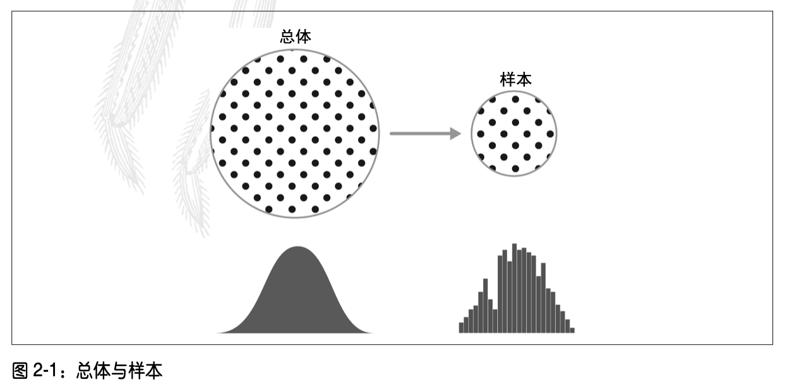
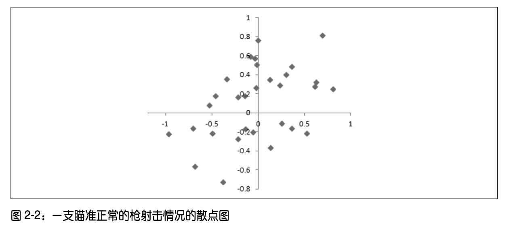
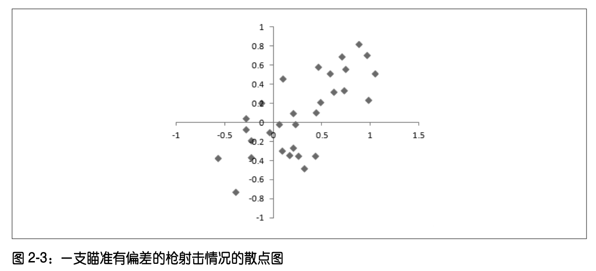
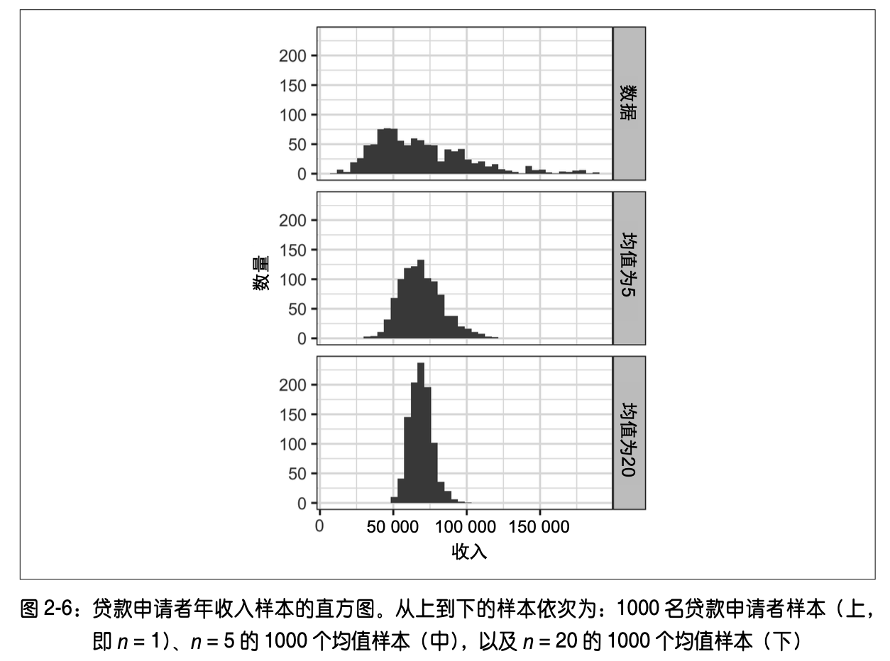
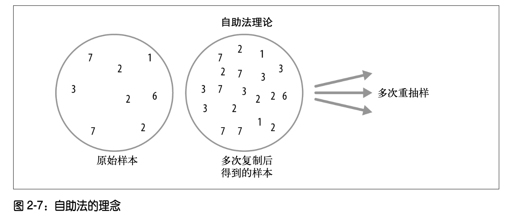
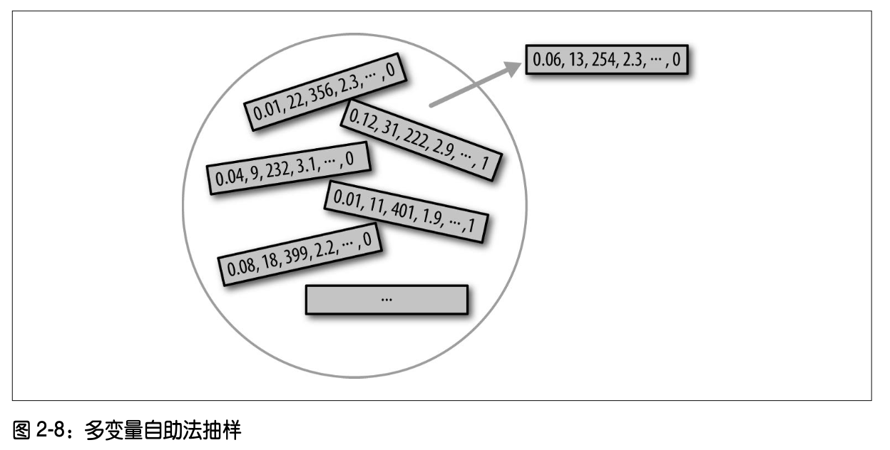
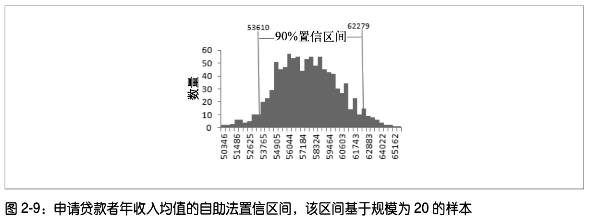
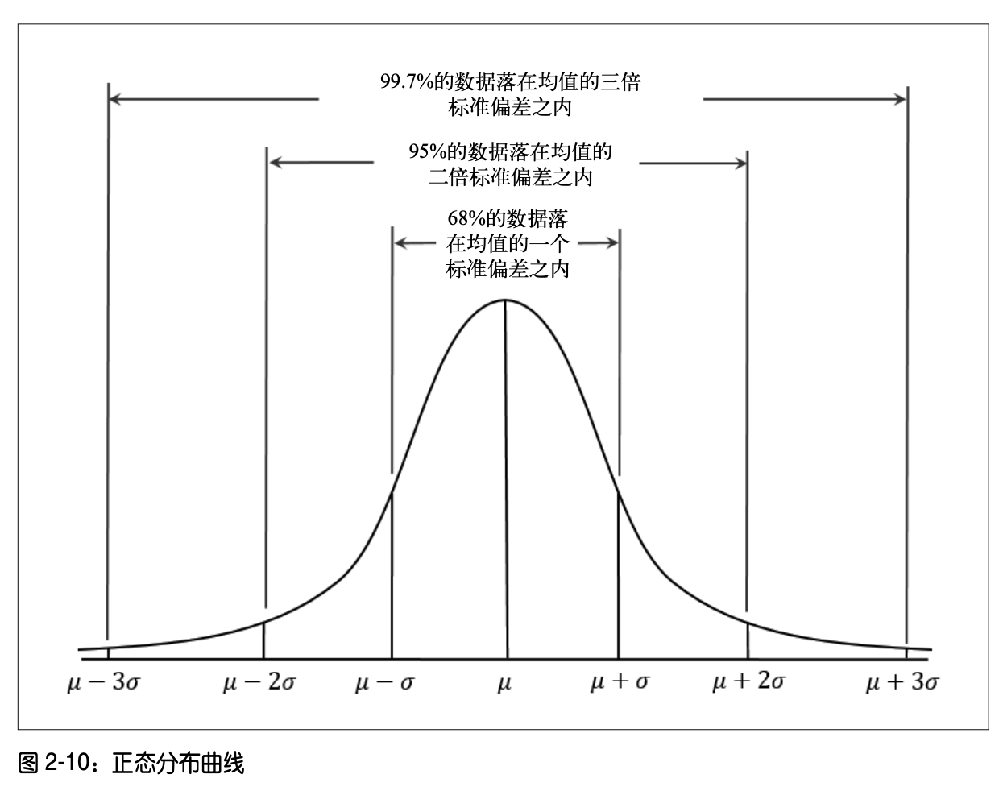
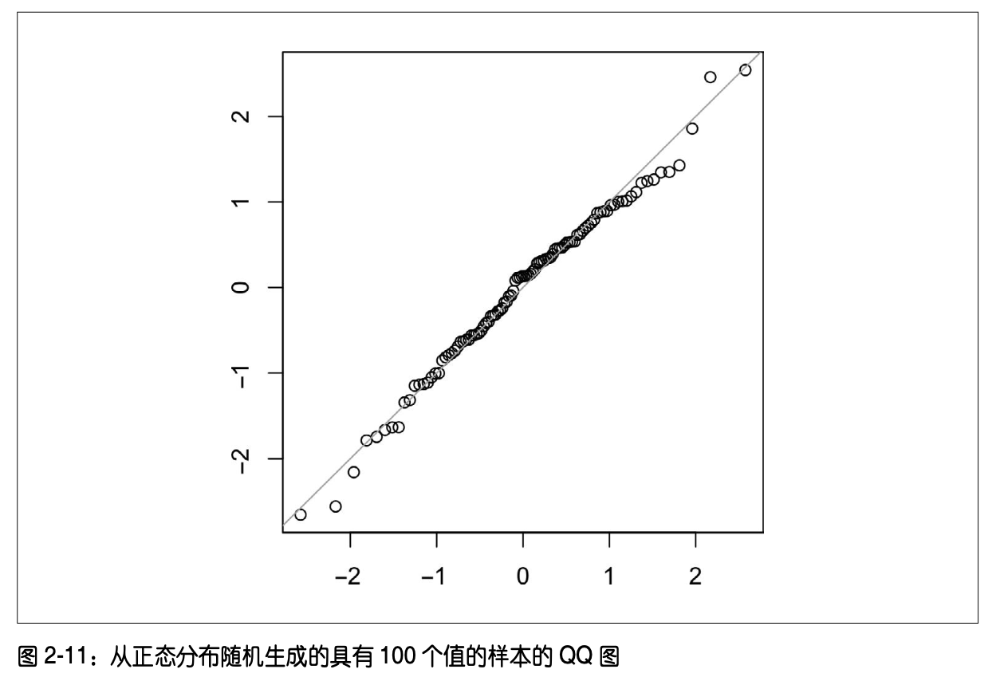

本章的理念可以用图 2-1 的模式表述。图中左侧表示总体，统计学假设总体遵循一个潜在 的未知分布。图的右侧表示抽样数据及其经验分布，这是我们唯一可用的。要想根据左侧 的图获得右侧的图，我们需要做抽样，图中用箭头表示。传统统计学关注的主要是图的左 侧部分，即如何对总体运用一些基于强假设的理论。现代统计学已将关注点转移到图的右 侧部分，因而也不再需要做出假设。

一般而言，数据科学家并不需要操心图中左侧(即总体)的理论本质，而是应聚焦于抽样 过程和手中的数据。但有一些特定的情况仍需要他们关注。有些数据是由可建模的物理过 程生成的。最简单的例子就是遵循二项分布的抛硬币过程。现实生活中的所有二项分布， 例如是否购买、是否存在欺诈、是否点击等，都可以有效地建模为一次抛硬币的过程。当 然，一般还需要对硬币正面向上的概率做一定的修正。在此类情况下，我们可以通过对总 体的理解，从中获得一些额外的洞见。
样本是大型数据集的一个子集，统计学家通常将大型数据集称为总体。在统计学中，总体指的是大量确实存在的数据，但有时也可以 是一个理论上的或者构想得到的数据集。
主要术语：
大型数据集的一个子集。
一个大型数据集，或是一个构想的数据集。
一般用 N 表示总体的规模，n 表示样本的规模。
从总体中随机抽取元素到样本中。
对总体分层，并在每层中做随机抽样。
在不对总体分层的情况下，做随机抽样所得到的样本。
样本对总体做出了错误的解释。
在随机抽样过程中，以均等的机会从总体的所有可用成员中抽取，得到一个样本。随机抽 样生成的样本被称为简单随机样本。抽样可以是有放回的，即可以在每次抽取后将所抽取 的观测值放回到总体中，并可被随后的抽取重新选中。抽样也可以是无放回的，即一个观 测值一旦被抽取，就不会参与随后的抽取。
一般情况下，我们在做估计或是根据样本拟合模型时，数据质量的影响要大于数据规模的 影响。 在数据科学中，数据质量涉及数据的完整性、格式的一致性、整洁性以及单个数据 点的准确性。在统计学中，数据质量还涉及抽样的代表性这一概念。
样本偏差，即样本以某种有意义的非 随机方式，不同于其想要代表的大规模总体。**非随机性(nonrandom)**这一术语非常重要， 因为几乎任何样本都无法准确地表示总体，即便是随机抽样也做不到。一旦差异具有意义， 就会发生样本偏差。如果其他样本也使用了同样的抽取方式，那么也会存在样本偏差。
自选择抽样偏差(self-selection sampling bias)
在 Yelp 等社交媒体上，我们能看到一些对餐馆、酒店、咖啡馆等的评论。 这些评论容易产生偏差，因为提交评论的人并非随机选取的。他们写评论是 基于一定的出发点的，这将导致自选择偏差的产生。有意向撰写评论的人， 很可能是那些获得了不好体验的人，也可能是一些与商家有关联的人，或者 就是与没有发表评论者不同的一类人。注意，在将一个商家与类似的商家做 对比时，尽管自选择样本或许并未可靠地表明事情的真实状态，但它们依然 是更为可靠的，因为对比的双方都存在同样的自选择偏差。
统计偏差是一些系统性的测量误差或抽样误差，它是在测量或抽样过程中产生的。我们应 严格区分由随机选取所导致的误差和由偏差所导致的误差。以开枪射击一个目标这一物理 过程为例。并非每次射击都能击中绝对意义上的靶心，或者说很少能击中。虽然无偏过程 也会产生误差，但所产生的误差是随机的，并且不会强烈地趋向于任意方向，如图 2-2 所 示。图 2-3 给出的是一个有偏过程的结果，在 x 轴和 y 轴方向上，不仅存在着随机误差， 还存在着偏差。射击点趋向于落在右上象限部分。


偏差有多种形式，它也许是可以观察到的，也可能是不可见的。如果结果确实表示存在偏 差(例如，通过参考基准或实际值)，这通常表明我们指定了不正确的统计学或机器学习 模型，或是漏掉了某个重要的变量。
如今，实现 样本代表性的方法有很多，所有这些方法的核心都是随机抽样。
随机抽样并不容易实现，关键在于如何正确地定义可访问的总体。假设我们想要生成客户 的一个代表性形象，并且需要执行一次试点客户调查。调查要具有代表性，但是所需的工 作强度极大。
首先，我们需要定义客户是谁。我们可以选择购买金额大于零的所有客户记录。那么是否 要考虑过去所有的客户?是否要考虑退款情况?是否要考虑内部测试购买情况?是否需要 考虑经销商、结算代理人和客户?
下一步，我们要指定抽样过程。抽样可以是“随机选取 100 名客户”。当涉及对某个数据 流的抽样时，如实时客户交易、Web 访问者等，时间上的考虑很重要，例如工作日上午十 点的 Web 访问者可能不同于周末晚上十点的 Web 访问者。
采用分层抽样时，我们将总体分成多个层，并在每一层中做随机抽样。例如，在一次政治 民意调查中，可能需要了解美国白人、非裔美国人和拉美裔美国人的选举倾向。如果我们 对总体做一次基本的随机抽样，得到的样本中可能非裔和拉美裔美国人人数过少。因此在 分层抽样中，需要对不同的层赋予不同的权重，以生成对等的抽样规模。
更多内容详见书籍。
总体中的样本均值一般用符号 表示，而总体的均值一般用 表示。为什么要区分这两者?这是因为样本的信息是可以观测到的，而大规模的总体的信息通常获取自规模较小的样本。统计学家喜欢从符号上对两者加以区分。
本节要点：
选择偏差是指以一种可导致误导性或短暂性结论的方式，有选择性地选取数据的操作。选 择偏差可能是有意而为之，也可能是无意识的。
主要术语：
系统性误差。
为得到感兴趣的结果，在数据中做大量的查找。
由于重复的数据建模，或使用大量的预测变量对数据建模所导致的偏差或非可重 现性。
在统计学中，除了大规模搜索效应之外，选择偏差的典型形式还包括非随机抽样(参见抽 样偏差)、主观随机挑选(cherry-picking)数据、选取突出特定统计效应的时间间隔，以及 在结果看上去“具有意义”时停止实验。
趋均值回归指对同一变量做连续测量时出现的一种现象，即在极端观测值后，会出现更趋向于中心的观测值。对极值给予特殊的关注和意义，会导致某种形式的选择偏差。
统计量的抽样分布指从同一总体中抽取多个样本时，一些样本统计量的分布情况。经典统计学主要关注如何从小样本推导更大总体的情况。
主要术语：
对抽取自大规模总体中的样本做计算，所得到的一些度量值。
单个值在数据集中的频数分布。
一个样本统计量在多个样本或重抽样中的频数分布。
当样本的规模增大时，抽样分布呈正态分布的趋势。
多个样本间样本统计量的变异性(标准偏差)。不要与标准偏差混淆，后者指的 是个体数据值间的变异性。
我们从总体中抽取样本，通常是为了测量某个样本统计量，或是使用统计学或机器学习模 型进行建模。鉴于估计量或模型是基于某个样本的，因此其中可能存在误差，也可能会由 于抽取样本的不同而有所差异。我们需要了解这种差异究竟如何，即我们的主要关注点在 于抽样的变异性。如果有大量的数据，那么我们可以从中抽取更多的样本，进而直接观察 样本统计量的分布情况。只要数据易于获取，那么我们一般会使用尽可能多的数据去计算 估计量或拟合模型，而非总是使用从总体中抽取更多样本的方法。
区分单个数据点的分布(即数据分布)和样本统计量的分布(即抽样分布) 非常重要。
通常，样本统计量(如均值等)的分布要比数据本身的分布更加规则，分布的形状更趋向 于正态分布的钟形曲线。统计所基于的样本规模越大，上面的观点就愈发成立。此外，样 本的规模越大，样本统计量的分布就越窄。
下面我们用一个例子来解释这一观点。本例中使用的数据来自向 Lending Club 公司申请贷 款者的年收入数据(对于数据的详细描述，参见 6.1.1 节)。我们对数据做三次抽样，得到 的三个样本分别为:具有 1000 个值的样本、取 5 个数据均值的 1000 个均值样本，以及取20 个数据均值的 1000 个均值样本。然后我们绘制每个样本的直方图，如图 2-6 所示。

上例中的现象被称为中心极限定理。该定理指出，即便原始总体不符合正态分布，但是只 要样本的规模足够大，并且数据并非在很大程度上偏离正常值，那么从多个样本得到的均 值将会呈现出我们所熟知的钟形正态曲线(参见 2.6 节)。在使用抽样分布做推理时，即置 信区间和假设检验中，中心极限定理允许我们使用 t 分布这样的近似正态公式。
中心极限定理在传统的统计学教科书中得到了大量的关注，因为它是支持假设检验和置信 区间的底层机制，而这些内容本身就占据了教科书的一半篇幅。数据科学家应该了解这一 点，但是鉴于在数据科学中，任意场景都能使用自助法(bootstrap)解决问题，很少正式 地使用假设检验和置信区间，因此中心极限定理并非处于数据科学实践的中心位置。
标准误差是一种单变量度量，它总结了单个统计量抽样分布的变异性。标准误差可以根据样本值的标准偏差 s 和样本规模 n，使用基于统计学的方法进行估计，公式如下：
正如我们在图 2-6 中所观察到的，标准误差会随样本规模的增大而减小。有时，我们称标 准误差与样本规模间的关系为 n 的平方根规则。如果要使标准误差减小一半，那么样本规 模应该增大四倍。
标准误差计算公式的合理性源于中心极限定理(参见 2.3.1 节)。事实上，我们不必依靠中 心极限定理来理解标准误差。下面的方法可用于测量标准误差。
但是在实践中，通过采集新样本去估计标准误差的方法通常并不可行，从统计意义上看也 存在很大的浪费。幸运的是，我们完全不需要抽取全新的样本，而可以使用自助法进行重 抽样(参见 2.4 节)。在现代统计学中，自助法已成为估计标准误差的标准方法。自助法几 乎适用于所有的统计量，它不依赖于中心极限定理或其他的分布假设。
标准偏差与标准误差
不要将标准偏差和标准误差混为一谈。标准偏差测量的是单个数据点的变异 性，而标准误差测量的是抽样度量的变异性。
要估计统计量或模型参数的抽样分布，一个简单而有效的方法是，从样本本身中有放回地 抽取更多的样本，并对每次重抽样重新计算统计量或模型。这一过程被称为自助法。自助法无须假设数据或抽样统计量符合正态分布。
主要术语：
从观测数据集中做有放回的抽取而得到的样本。
在观测数据中重复抽取样本的过程，其中包括自助过程和置换(混洗)过程。
从概念上看，我们可以这样理解自助法:将原始样本复制成千上万次，得到一个假想的总 体，其中包括了原始样本中的全部信息，只是规模更大。然后我们从这一假想总体中抽取 样本，用于估计抽样分布。自助法的理念如图 2-7 所示。

在实践中，完全不必真正地多次复制样本。只需在每次抽取后，将观测值再放回总体中， 即有放回地抽样。这一方式有效地创建了一个无限的总体，其中任意一个元素被抽取的概 率在各次抽取中保持不变。使用自助法对规模为 n 的样本做均值重抽样的算法实现如下。
我们称 r 为自助法的迭代次数，r 的值可任意指定。迭代的次数越多，对标准误差或置信 区间的估计就越准确。上述过程的结果给出了样本统计量或估计模型参数的一个自助集， 可以从该自助集查看统计量或参数的变异性。
自助法也可用于多变量数据。这时该方法使用数据行作为抽样单元，如图 2-8 所示，进而 可在自助数据上运行模型，估计模型参数的稳定性(或变异性)，或是改进模型的预测能 力。我们也可以使用分类和回归树(也称决策树)在自助数据上运行多个树模型，并平均 多个树给出的预测值(或是使用分类，并选取多数人的投票)，这通常要比使用单个树的 预测性能更好。这一过程被称为 Bagging 方法。Bagging 一词是 bootstrap aggregating(自 助法聚合)的缩写。

自助法还可用于确定抽样的规模，它通过实验查看不同的 n 值对抽样 分布的影响。
自助法并不补偿小规模样本。它不创建新的数据，也不会填补已有数据集中 的缺口。它只会告知我们，在从原始样本这样的总体中做抽取时，大量额外 的样本所具有的行为。
正如上节所介绍的，有时重抽样这个词等同于自助法。在更多情况下，重抽样还包括置换 过程(参见 3.3.1 节)。置换过程组合了多个样本，并且抽样可能是无放回的。但是在任何 情况下，自助法都是指对观测数据集做有放回的抽样。
要了解一个样本估计量中潜在的误差情况，除了使用前文介绍的频数表、直方图、箱线图和标准误差等方法外，还有一种方法是置信区间。
主要术语：
以百分比表示的置信区间。该区间是从同一总体中以同一方式构建的，可以包含我们感兴趣的统计量。
置信区间的两端。
不确定性当然不受人待见。人们(尤其是专家)很少说:“我不知道。”分析人员和管理者 虽然会承认不确定性的存在，但是很少会过于信任以单一数值呈现的估计量，即点估计。 为了解决这一普遍性问题，我们可以使用一个范围而不是单一的值去表示估计量。统计抽 样原理是置信区间的实现基础。
置信区间通常以覆盖程度的形式给出，表示为(高)百分比，例如 90% 或 95%。对 90% 置信区间的一种理解方式是，该区间涵盖了样本统计量自助抽样分布中间 90% 的部分(参 见 2.4 节)。更通用的理解是，在采用类似抽样过程的情况下，样本统计量的 x% 置信区 间，表明该区间平均在 x% 的情况下包含类似的样本估计量。
给定样本规模 n，并指定了一个感兴趣的样本统计量，计算自助法置信区间的算法如下。
[(1-[x/100])/2]%。图 2-9 显示了对于规模为 20、均值为 57573 美元的样本，申请贷款者的年收入均值的 90% 置信区间。

在生成大多数统计量或模型参数的置信区间时，自助法是一种通用的工具。半个多世纪以 来，统计学教材和软件一直都基于缺少计算机的统计分析，它们会使用由一些公式(尤其 是 t 分布，参见 2.8 节)生成的置信区间。
置信区间所给出的百分比被称为置信水平。置信水平越高，置信区间越宽。此外，样本规 模越小，置信区间也会越宽，即不确定性越大。两者都成立。如果要在数据更少的情况下 增加置信度，那么我们必须让置信区间足够宽，以确保捕获真实值。
对于数据科学家而言，置信区间是一种了解样本结果可能的变化情况的工 具。数据科学家使用这一信息时，既不是像研究人员那样为了发表学术论 文，也不是为了向监管机构提交结果，而是想了解某个估计量的潜在误差情 况，并确定是否需要更大的样本。
呈钟形的正态分布是传统统计学中的一个标志性概念 。事实上，由于样本统计量的分布通 常呈现出正态分布的形状，这使得正态分布业已成为一种推导样本统计量近似分布的数学 公式的强大工具。
主要术语：
数据点与预测值或均值间的差异。
数据值减去均值，再除以标准偏差。
单个数据点标准化的结果。
均值为 0、标准偏差为 1 的正态分布。
对样本分布与正态分布间接近程度的可视化绘图。
在正态分布(如图 2-10 所示)中，68% 的数据位于均值的一个标准偏差之内，95% 的数 据落于两倍的标准偏差之内。

对正态分布的一个常见误解是，该分布之所以被称为“正态分布”，是因为 其中大部分数据符合正态分布，即数据值是正态的。然而，数据科学项目中 使用的大部分变量(事实上，大多数原始数据)通常并不是正态分布的(参 见 2.6 节)。正态分布源于很多统计量在抽样分布中是正态分布的。即便如此，只有在经验概率分布或自助法分布不可用时，才会使用正态性假设作为 最后一招。
标准正态分布和QQ图：
在标准正态分布中，x 轴的单位为距离均值的标准偏差。为了使数据能够与标准正态分布 做对比，我们需要将数据值减去均值，然后除以标准偏差。这一过程被称为归一化或标准 化(参见 6.1.4 节)。注意，这里所说的“标准化”与数据库记录的标准化(即转换为通用 格式)无关。我们称转化值为 z 分数，正态分布有时也被称为 z 分布。
QQ 图用于可视化地确定样本与正态分布间的近似度。QQ 图对 z 分数从低到高进行排序， 并将每个值的 z 分数绘制在 y 轴上。x 轴的单位是该值**秩(rank)**的正态分布所对应的分 位数。由于数据是归一化的，所以单位的个数对应于数据值与均值间的距离是标准偏差 的多少倍。如果数据点大体落在对角线上，那么可以近似地认为样本分布符合正态分布。 图 2-11 显示了从正态分布随机生成的具有 100 个值的样本的 QQ 图。正如我们所期待的那 样，数据点十分接近对角线。

将数据转换为 z 分数(即标准化或归一化数据)，并不会使数据符合正态分布。它只是将数据转化到与标准正态分布相同的尺度上，通常是为了对比。
尽管正态分布在统计学历史中具有非常重要的地位，但是数据通常并不符合正态分布，这与其名称完全不符。
主要术语：
一个频数分布的狭长部分，其中相对极值出现的频数很低。
分布的一个尾部长于另一个尾部。
虽然正态分布非常适用于误差和样本统计量的分布，也非常有用，但是它并未表示出原始 数据的分布特性。有时，数据的分布是高度偏斜(即不对称)的，如借款者的收入数据。 有时，数据也会是离散的，如二项分布数据。对称分布和不对称分布都可能具有长尾效 应。数据分布的尾部，对应于数据中的极值，包括极大值和极小值。在实际工作中，长尾 问题(以及如何避免出现长尾问题)备受关注。纳西姆 • 塔勒布(Nassim Taleb)提出了黑 天鹅理论，该理论预测异常事件(如股市崩盘)发生的可能性远大于正态分布的预测。
大量的统计学文献研究了统计分布如何拟合观测数据的问题。我们应谨慎地 使用以数据为中心的方法，它们不仅涉及科学，同样具有艺术性。从表面上 看，数据是变化的，但也具有一致性。数据的分布可能具有多种形状和类 型。在对给定情况建模时，通常必须借助于一些领域知识和统计学知识，才 能确定适合的分布类型。例如，使用每五秒内服务器因特网流量的连续观测 数据，有助于确定对“每个时间间隔的事件”建模的最优分布是否符合泊松 分布(参见 2.10.1 节)。
t 分布呈正态分布形状，但是钟形稍厚，尾部略长。 t 分布广泛用于描述样本统计量的分 布。样本均值的分布通常呈 t 分布形状。t 分布是一个分布家族，家族中的每个成员根据样 本规模的不同而有所不同。样本的规模越大，t 分布就越趋向于正态分布形状。
主要术语：
表示一个样本的规模。
自由度是一个参数，允许根据不同的样本规模、统计量和组数对 t 分布进行调整。
我们可以将一组不同的统计量标准化，然后与 t 分布进行对比，并根据抽样变异性估计置 信区间。考虑一个规模为 n 的样本，其中样本均值 x 已经计算出来。如果 s 是样本的标准 偏差，那么样本均值周边 90% 的置信区间由下式给出。
其中x， 是自由度为 (n-1) 情况下的 t 统计量值，它表示在 t 分布的 n 两端分别“截去”了 5%。t 分布能为样本均值的分布、两个样本均值间的差异、回归参数等统计量提供参考。
要让 t 分布准确地解释样本统计量的特性，需要样本统计量的分布形状类似于正态分布。t 分布之所以被广泛使用是基于这样一个事实:即便底层的总体数据并不符合正态分布，但 样本统计量通常符合正态分布。该现象被称为中心极限定理(参见 2.3.1 节)。
数据科学家需要了解 t 分布和中心极限定理中的哪些内容?答案是并不需要 了解太多。这些分布是用于经典的统计推理中的，在数据科学中并非十分重 要。对于数据科学家而言，重在理解并定量分析不确定性和变异性。这时， 以实验为依据的自助抽样可以解答大多数与抽样误差相关的问题。但是，数 据科学家还是时常会在统计学软件和 R 的统计过程中遇到 t 统计量，比如在 A/B 测试和回归中。因此，了解这些分布的目的对于数据科学家来说也是有 所裨益的。
主要术语：
一次输出离散值的事件，例如，一次硬币抛掷。
一次试验的输出为我们感兴趣的结果。
同义词:1(相对于 0)
具有两个输出
同义词:是 / 否、0/1、二元 二项试验
有两种输出的试验。
同义词:伯努利试验
在多次试验中(例如 x 次)，成功次数的分布。
同义词:伯努利分布
“是 / 否”这样的(二项)结果是数据分析的核心，因为它通常是决策或其他过程的结果， 例如，买或不买，点击或不点击，存活或死亡等。试验对于理解二项分布至关重要。在一 组试验中，每次试验有两种可能的结果，每种结果具有一个明确的概率。
例如，抛硬币 10 次是一个包含 10 次二项试验的实验，每次试验有两种可能的结果，即正 面或背面朝上(如图 2-14 所示)。“是 / 否”“0/1”这样的结果称为二元结果，两种结果不 一定都有 50% 的概率。事实上，只要两种结果的概率之和为 1 即可。统计学中的惯例做法 是，将输出为“1”的试验称为一次成功的结果，而且通常将“1”指派给较罕见的结果。 这里使用“成功”一词，并非表示结果是我们需要的或是对我们有利的，而是表示试验的 确倾向于给出我们感兴趣的结果。例如，我们可能会对预测贷款拖欠或欺诈性交易感兴 趣，这些事件是相对罕见的，因此我们可以将这类事件定义为“1”或“成功”。
二项分布是在给定每次试验的成功概率 p、实验次数 n 的情况下，成功数 x 的频数分布。 根据 x、n 和 p 值的不同，二项分布也构成了一个分布家族。
二项分布的均值是 n×p，也可以将均值视为 n 次试验的期望成功次数，其中每次试验的成功概率是 p。
二项分布的方差是 n×p(1-p)。如果试验的次数足够多(尤其是当 p 接近于 0.5 时)，二项 分布几乎等于正态分布。事实上，计算大规模样本的二项概率对计算能力的要求很高，因 此大多数统计程序会使用具有一定均值和方差的正态分布给出近似计算。
一些过程是根据一个给定的整体速率随机生成事件的。所生成的事件可能是随时间扩展的，例如某个网站的访问者情况、一个收费站的汽车到达情况等;也可能是散布于空间中的，例如每平方米纺织品上的缺陷情况、每百行代码中的拼写错误情况。
主要术语：
单位时间内或单位空间中的事件发生率。
单位时间内或单位空间中事件数量的频数分布。
在时间或距离上，从一个事件到下一个事件的频数分布。
泛化版本的指数分布。韦伯分布允许事件发生的速率随时间变化。
我们可以根据先验数据估计单位时间内或单位空间中的平均事件数量。但是我们可能也想 知道，单位时间或单位空间之间事件的差异情况。泊松分布通过对很多单位抽样，可以告 诉我们单位时间内或单位空间中事件的分布情况。例如，对于回答排队问题，泊松分布就 非常有用，比如:“如果要确保在 95% 的情况下，可以完全处理任意五秒内到达服务器的 网络流量，我们需要多大的容量?”
泊松分布的一个关键参数是 λ(lambda)。它表示在指定时间或空间间隔中，事件发生数量 的均值。泊松分布的方差也是 λ。
指数分布可以建模各次事件之间的时间分布情况，例如，网站访问的时间间隔，汽车抵达 收费站的时间间隔。它所使用的参数 λ 与泊松分布一样。在工程领域，指数分布可用于故 障时间的建模;在过程管理领域，指数分布可用于对每次服务电话所需的时间进行建模。
在针对泊松分布或指数分布的模拟研究中，一个关键假设是速率 λ 在所考虑的时间周期内 是保持不变的。从总体上看，这一假设很少是合理的。例如，公路或数据网络上的流量会 随一天中的不同时段或者一周中的不同日子而变化。但是，我们可以将时间或空间切分为 几乎同等的几个部分，这样就可以在其中做分析或模拟。
在许多应用中，事件发生率 λ 是已知的，或者可以从先验数据中估计出来。但是对于极 少发生的事件，却未必如此。例如，飞机引擎发生故障就十分罕见，所以对于指定的 引擎类型，几乎没有数据可用于估计发生故障的时间间隔。如果完全没有数据，就几乎 没有什么基础可供估计事件的发生率。然而，我们可以做一些猜测:假如经过 20 个小时 后没有发生事件，那么就可以确定事件的发生率不会是每小时一次。我们可以通过模拟 或者直接计算概率，评估不同的假设事件发生率，并估计出一个阈值(发生率不可能比 它低)。如果我们有一些数据，但是这些数据不足以对事件发生率做出准确可靠的估计， 那么这时可以应用“拟合度检验”(参见 3.9 节)检测各种发生率，以确定它们对观察数 据的拟合情况。
在某些情况下，事件发生率并不能随时间的变化而保持恒定。如果事件的变化周期远大于 事件在一般情况下的发生间隔，并没有问题。正如 2.10.2 节中所介绍的，我们只需将分析 切分为多个间隔段，保持每段中的事件发生率相对固定即可。但是，如果事件发生率在每 个间隔中也会发生变化，那么指数分布或泊松分布就不再有用了。在机械故障问题中，机 器发生故障的风险会随时间的增加而增大，这时可能就会出现这种情况。韦伯分布是指数 分布的一种延伸，它通过指定形状参数 β，允许事件发生率产生变化。如果 β>1，那么事 件发生率会随时间增大;如果 β<1，那么事件发生率会随时间降低。由于我们使用韦伯分 布分析的是发生故障的时间，而非事件发生率，因此分布的第二个参数表示的是特征生 命，而非每个时间间隔中的事件发生率。该参数也被称为比例参数，用 η 表示。
在使用韦伯分布时，需要估计 β 和 η 这两个参数。